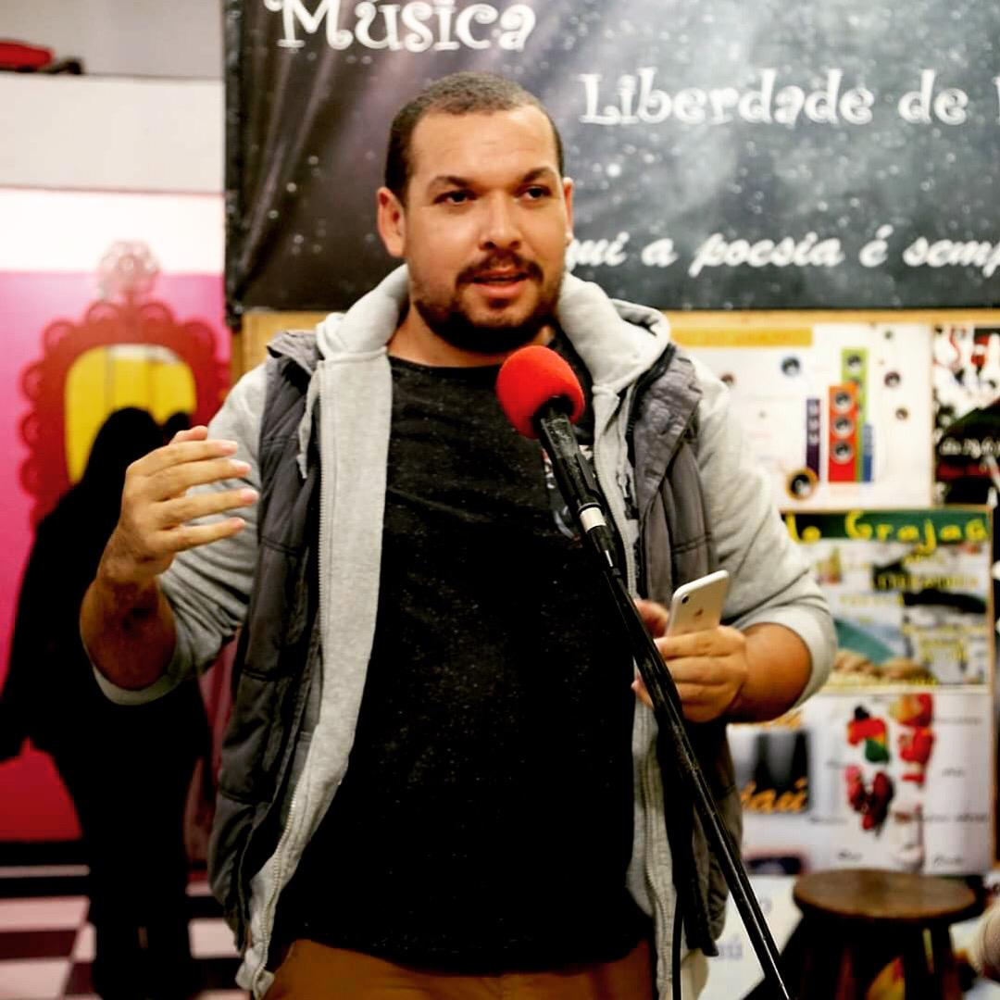

Bem, sou o Francisco Viana, hoje curso análise e desenvolvimento de sistemas na faculdade Bandtec, estou no último semestre do curso, e trabalho como estagiário na Stefanini IT Solutions. Antes de trabalhar e estudar TI, eu trabalhava com contabilidade, mas comecei a trabalhar como auxiliar de serviços gerais, mas fazia uma função de boy interno depois, fui promovido à auxiliar administrativo, e em sequência para assistente fiscal, com apuração de impostos e emissão de notas fiscais. Em 2018, comecei a faculdade de ADS, e assim conhecendo essa área de tecnologia. Para ver meu perfil profissional, entre nesse link do meu perfil no LinkedIn: Clique aqui
 @francisco_sviana
@francisco_sviana